はじめに
Oracle Base Database Service(BaseDB)では、OS以上がユーザー管理となるため、ユーザー側でパッチ適用の計画と適用実施が可能です。 ここでは、DatabaseとGrid Infrastructureに対するそれぞれのパッチ適用方法についてご紹介します。
前提条件 :
-
Oracle CloudでOracle Databaseを使おう を通じて Oracle Database の作成が完了していること
-
パッチ適用対象の Oracle Database に対して最新RU/RURが適用されていないこと
注意 チュートリアル内の画面ショットについては現在の画面と異なっている場合があります。
目次
所要時間 : 約15分
1. 現在のバージョンを確認しよう
まずは、コンソール上で作成済みの Database と Grid Infrastructure のバージョンを確認していきましょう。
- コンソールメニューから Oracle Database → Oracle Base Database を選択し、対象のDBシステムを選択します。
DBシステムの詳細 ページの DBシステム・バージョン が Grid Infrastructure のバージョンを指します。
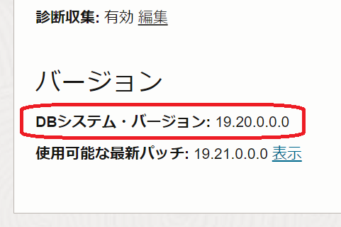今回はバージョンは 19.20.0.0.0です。
- 画面中央の データベース に一覧表示されている 名前 を選択します。
データベース詳細 ページの データベースのバージョン が Database のバージョンを指します。
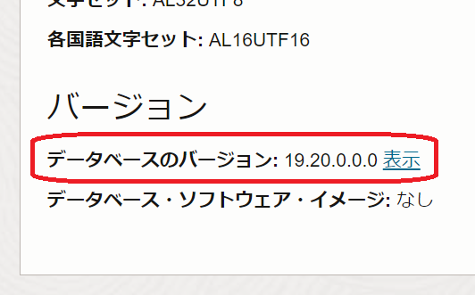今回はバージョンは 19.20.0.0.0です。
2. Grid Infrastructure にパッチを適用しよう
DBシステムの詳細 ページで、バージョン「使用可能な最新パッチ」の 表示 を選択すると、適用可能なパッチリストが表示されます。 今回は 19.21.0.0.0 を適用してみます。
- DBシステムの詳細 ページで、バージョン「使用可能な最新パッチ」の 表示 を選択します
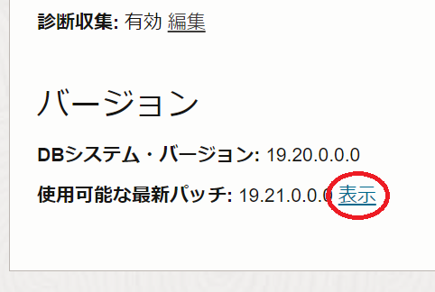
「更新」ページに遷移すると、適用可能なパッチリストが表示されます。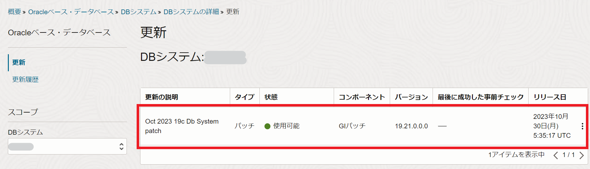 - 適用したいパッチの右の … をクリックして、『事前チェック』 をしてみましょう。この環境に適用できるかどうか(コンフリクトなど)をチェックが走ります。事前チェックの確認 画面で『事前チェックの実行』をクリックします。
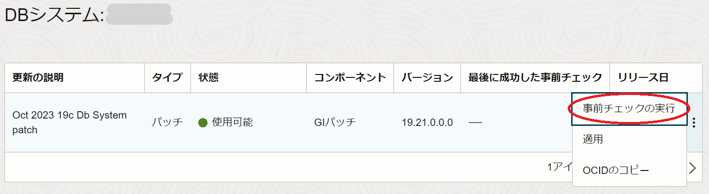 - 事前チェックで問題がなければ、『適用』をしてみましょう。パッチの適用 画面で『パッチの適用』をクリックします。
なお、Real Application Clusters で2ノード構成になっている場合は、ローリングで一台ずつ適用されます。
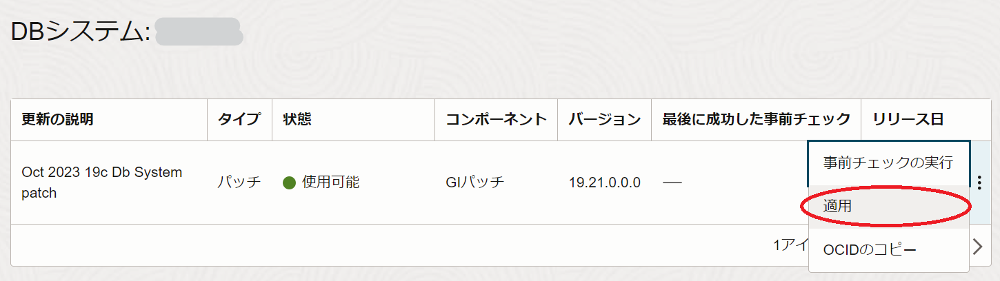
適用が完了すると DBシステムのステータスが「使用可能」になり、DBシステム・バージョンが 19.21.0.0.0 に変わっている事が確認できます。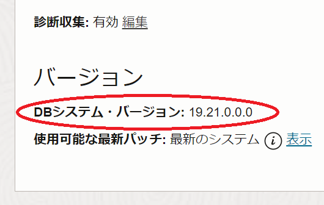
3. Database にパッチを適用しよう
続いて、Database にパッチを適用していきましょう。 今回は 19.21.0.0.0 を適用してみます。
- データベース詳細 ページで、バージョン「データベースのバージョン」の 表示 を選択します
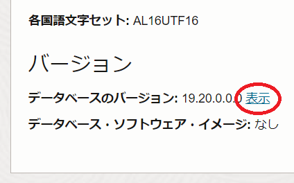
「更新」ページに画面遷移すると、適用可能なパッチリストが表示されます。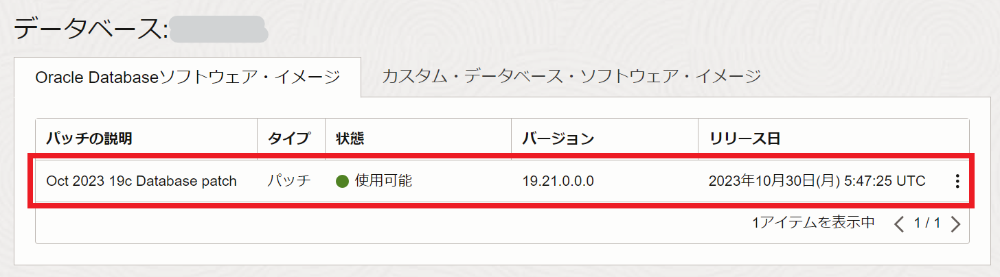 - 適用したいパッチの右の … をクリックして、『事前チェック』 をしてみましょう。この環境に適用できるかどうか(コンフリクトなど)をチェックが走ります。事前チェックの確認 画面で『事前チェックの実行』をクリックします。
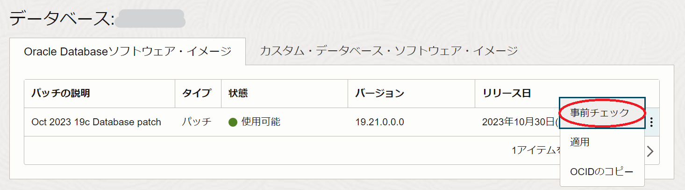 - 事前チェックで問題がなければ、『適用』をしてみましょう。確認 画面で『送信』をクリックします。
Real Application Clusters で2ノード構成になっている場合、Grid Infrastructure と同様にローリングで一台ずつ適用されます。
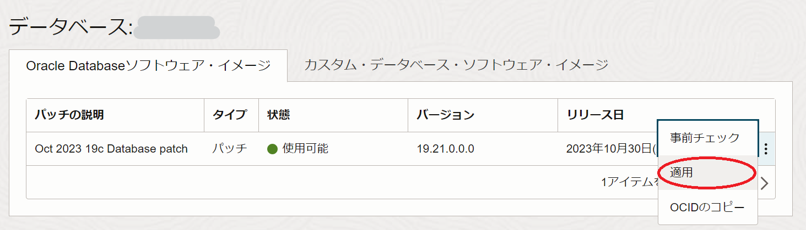
適用が完了すると DBシステムのステータスが「使用可能」になり、データベースのバージョンが 19.21.0.0.0 に変わっている事が確認できます。
DBシステムとデータベースに適用されたパッチは更新の更新履歴から確認できます。パッチ適用に失敗した場合はSRをあげることを推奨しています。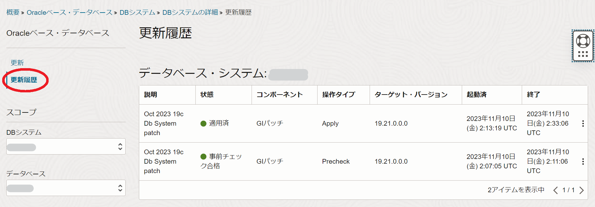
まとめ
BaseDBはパッチ適用のタイミングや適用するか否かの判断をユーザー側でできるという柔軟度はあります。
ただし、古いパッチのまま使い続けることはセキュリティ面や既知の不具合などのリスクや、環境の再作成が必要になった場合に古いイメージで新規作成ができないなどのリスクが考えられます。
その為、パッチを適用しない(塩漬け)でいいというわけではありませんので、定期的なパッチ適用を行っていただければ幸いです。
以上で、この章の作業は完了です。